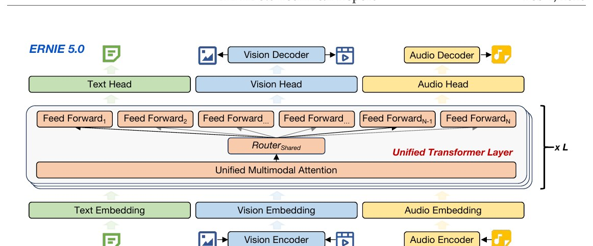
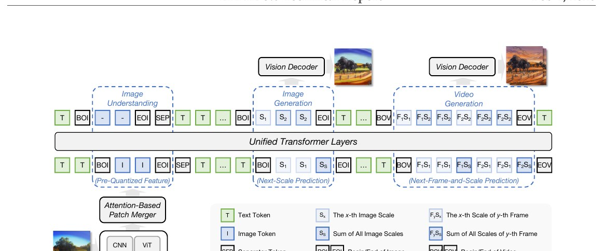
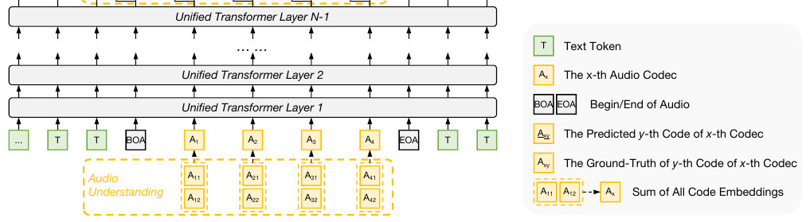
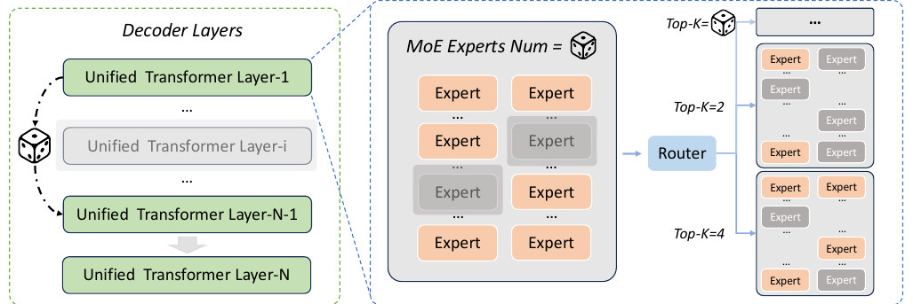
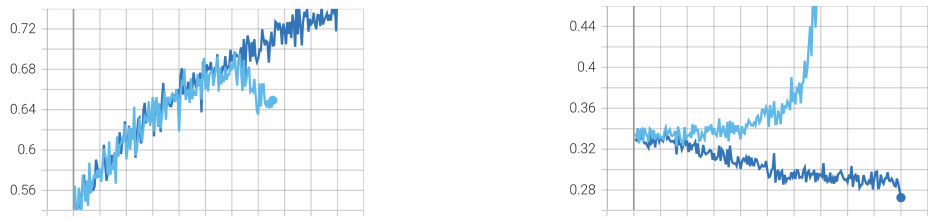

速览
版本：本页对照的 PDF 页眉为 arXiv:2602.04705v1 [cs.CL] 4 Feb 2026，即 v1。评测均在内部框架 ERNIE-Eval 上完成§6。
五条要点
真·统一：一个自回归 MoE 管四模态理解与生成
文本 NTP（+MTP），视觉 NFSP（next-scale / next-frame），音频 NCP（逐 codec 层）全部归入 Next-Group-of-Tokens 预测§2.1；路由只看 token 表示、不看模态 ID，共享专家池§2.1。高分辨率细节则交给独立训练的级联扩散 refiner§2.2.3——不是「纯 AR 到像素」。
理解与生成走两条视觉通路
生成用 bit-wise 量化的离散 token；理解不用量化后 token，而是取量化前的 CNN + ViT 双路特征，用 Attention-based Patch Merger 融合（图像 K=4、视频 K=16 个 patch 合一）§2.2.2。作者称 MLP 融合会互相干扰，但未给数字。
弹性训练：一次预训练得到一族子模型
深度/宽度/top-k 三维随机采样子网络与全模型同步反传§3.3。Exp 版上，53.7% 激活参数 + 35.8% 总参数的子模型均分 75.17，全模型 75.55表 12；仅把 top-k 降到 25% 可解码提速 >15%§6.4.2。
知识与指令遵循强，硬推理落后
SimpleQA 74.01、MultiChallenge 65.98、Multi-IF 85.56 为表 2 各行最高；AIME 2025 89.06、HMMT 2025 79.58 低于 GPT-5 (High) 与 Gemini 3-Pro表 2。作者自己承认与 Gemini 3-Pro 在最难推理上有差距§6.1。
生成评测只有 GenEval + VBench
GenEval 90.1（Qwen-Image 91.0）表 5；VBench Semantic 83.40 为表内最高、Quality 84.40 低于三个外部基线表 6。正文提到支持像素级图像/视频编辑§2.2.2，但没有任何编辑评测，也没说评测是否经过 refiner。
架构：统一自回归骨干 + 超稀疏 MoE
相对前代 ERNIE 4.5：从「模态隔离路由」改为模态无关路由§2.1，并新增视觉/音频的生成输出口。

示意（本页绘制）：按 §2.1–2.3、§5.2–5.3 的文字整理。图 1 的 Router 标为 RouterShared，与 §6.4.1「所有模态由同一路由网络处理」一致；是否另设常驻共享专家原文未说明，此处不画；refiner 与 Vision Decoder 的具体衔接方式原文未给，用虚线表示。
视觉：一套 tokenizer 给生成，量化前特征给理解

音频：depth-wise 自回归，避免把多码本摊平

codec 为 RVQ 设计，token rate 12.5 Hz§2.3.1；第一个码对齐（平均池化后的）Whisper encoder 输出以承载语义，其余码承载音色、韵律等残差细节§2.3.1。RVQ 层数原文未写明。
相对 ERNIE 4.5 / 常见方案的改动清单展开
- 路由：ERNIE 4.5 是模态隔离路由；5.0 改为模态无关，免去「多于两种模态时怎么手工分配专家」的难题§2.1。
- 训练起点：不在预训练 LLM 上外挂模态解码器（late fusion），而是所有模态从零联合训练，作者称可缓解「能力跷跷板」§1。
- 文本 tokenizer：重训，UTF-16BE 编码 + BPE dropout§3.1。
- 负载均衡：aux-loss-free（bias 更新速度 1e-4 → 中训 1e-5）§2.1 · §3.2。
- 首层 MoE：路由熵分析显示文本在第一层并不严重失衡，作者据此质疑「早期 MoE 层需做成 dense」的常见假设§6.4.1（是否因此去掉 dense 首层，原文未说）。
数据：能写的都在这里，但原文给得很少
§3.1 只有约一页。没有任何模态配比、token 数或 caption 模型——下面没有比例条，因为原文没有比例。
已披露规模
| 项 | 原文写法 | 来源 |
|---|---|---|
| 预训练语料总量 | 「trillions of text tokens and multimodal instances」——无具体数字 | §3.1 |
| 文本 / 图像 / 视频 / 音频配比 | 原文未披露 | — |
| caption 生成方式、caption 模型、长度分布 | 原文未披露（只说「附 caption」） | §3.1 |
| 过滤器种类、阈值、去重粒度 | 原文未披露 | — |
| 合成数据 | 原文未提及 | — |
| SFT / RL 数据量与构成 | 原文未披露 | — |
| Global batch | 14M → 56M tokens（8K 阶段早期逐步放大） | §3.2 |
| 音频 token rate | 12.5 Hz | §2.3.1 |
| 视觉理解 token 合并 | 图像 K=4 patch / token；视频 K=16 patch（跨 4 帧）/ token | §2.2.2 |
| 弹性消融小模型数据 | 250B tokens（64 专家，454M 激活 / 3.2B 总参） | §6.4.2 |
跨模态 loss 怎么配平 §3.2
不给数据配比，但说了 loss 侧的做法：posterior-based loss weighting，把不同模态的自回归 loss 重缩放到同一区间，以防模态间失衡。具体缩放公式原文未披露。
视觉生成数据的「课程」 §2.2.1
不是数据课程，而是 tokenizer 课程：先用低 bit（小词表）tokenizer，再逐步换到高 bit。各档 bit 数与切换时机原文未披露。
refiner 训练对 §2.2.3
级联扩散 refiner 用「受控退化的低分辨率样本 ↔ 对应高分辨率图像/视频」配对训练，与骨干分开训练。退化种类原文未披露。
去污染 只有一句
「decontamination safeguards keep benchmarks out of the training data」§3.1。针对哪些基准、用什么匹配方法，原文未写。
训练配方
原文称 §3.2 只是「a part of training recipe」——总步数、总 token 数、优化器参数都没给。
8K 预训练
- 上下文
- 8K
- LR 调度
- WSD
- warmup
- 2,000 步 → 1e-4
- batch
- 14M → 56M tok
- RoPE base
- 1,000,000
- MTP 权重
- 0.3
- 均衡 bias 速
- 1e-4
32K & 128K 中训
- 上下文
- 32K → 128K
- LR 调度
- cosine
- LR
- 1e-4 → 1e-5
- batch
- 不变
- MTP 权重
- 0.1
- 均衡 bias 速
- 1e-5
SFT
- 目标
- 指令遵循 + 长 CoT
- 数据量
- 未披露
- 超参
- 未披露
UM-RL（多阶段）
- 任务
- 推理 / agent / IF 合并
- 奖励
- 统一 verifier
- 算法
- GSPO + IcePop 改
- 超参
- 未披露
弹性训练：三个正交维度

| 维度 | 全配置概率 | 子网络概率 | 子网络怎么采 | 小模型消融（val loss，越低越好） |
|---|---|---|---|---|
| Depth | 75%† | 25%† | 随机减少激活层数；消融里 Layers ∈ [1, 16] | 全深 1.941（基线 1.945）；12 层 2.137 表 9 |
| Width | 80% | 20% | 路由限定在随机采样的专家子集；消融里 64 → 32 | 64 专家 1.964（基线 1.957）；32 专家 2.218 表 10 |
| Sparsity | 80% | 20% | top-k 在小于默认值的预设范围内随机；消融里 k ∈ [1, 8] | k=8 1.969 / 4 1.971 / 2 2.003 / 1 2.175（基线 k=8 1.945）表 11 |
† §3.3 写 ERNIE 5.0 的深度弹性为 75% / 25%；§6.4.2 小模型消融却写「与 ERNIE 5.0 配置一致，80% 样本保留全深」——原文自相矛盾，见「局限」。消融小模型：64 专家、454M 激活 / 3.2B 总参、250B tokens、默认 top-k=8§6.4.2。
后训练 RL：四个针对「超稀疏 MoE + 多模态」的补丁
U-RB §4.1
rollout 占 RL 总时长 >90%。在 APRIL「超发请求、凑够即停」上加数据顺序约束：只有本轮分配的数据组能进训练池，长尾样本跨轮续写，避免「先训短的=先训简单的」带来的难度分布漂移。
MISC §4.2 · 图 6
直接把 IcePop 套到 GSPO（序列级截断 IS）会砍掉大量低熵回复，导致熵快速坍塌；改为 token 级 mask + 序列级比率（JMixedIcePop）。α、β、ε 取值未披露。
WPSM §4.2
按 query 记录成功率：准确率 > τ 且回复熵 < η 的正样本视为「已学会」，以系数 α∈[0,1] 降权，把梯度预算让给难题。τ、η、α 取值未披露。
AHRL §4.3 · 图 7
全零奖励的难题，把参考 think 的前 phint 比例拼进 query；phint = pinitial·exp(−γ·t·passinitial) 随训练退火，pass 来自 SFT 模型 pass@k。pinitial、γ、k未披露。

基础设施要点§5 · 展开
- 并行：TP 4 + PP 12（virtual stages）+ EP 64 + ZeRO-1 DP + CP；DeepEP 跨节点通信；全程 no-token-dropping§5.1。
- 显存：FP8 混精（激活存 FP8）、OOM 时自适应 offload 激活、子 batch 拆分大分配、基于 CUDA VMM 的自动碎片整理§5.1。
- tokenizer–骨干解耦：tokenizer 作为可横向扩展的独立服务部署在专用节点，骨干远程调用§5.2。
- FlashMask：算子级比 FlexAttention 最高快 200%，端到端训练加速 >20%；与 CP 内核级集成，比 Megatron-LM 方案提升 80%§5.3。
- RL 基础设施：中心化控制器的解耦异步控制面；训推同一套 FP8 算子 + Rollout Router Replay；保序 replay buffer；弹性 CPU 池跑环境交互与校验§5.4。
评测
全部在内部框架 ERNIE-Eval 上跑§6；代码类任务用 LiveCodeBench 与 SandboxFusion 做执行校验（原文脚注 1）。基线数字是复测还是引用，原文未说明。
生成：GenEval 与 VBench（柱从 0 起）
| VBench | HunyuanVideo-1 | Wan2.1-14B-0725 | Veo3 | ERNIE 5.0-Base | ERNIE 5.0 |
|---|---|---|---|---|---|
| Quality | 85.07 | 85.59 | 85.70 | 84.14 | 84.40 |
| Semantic | 76.88 | 76.11 | 82.49 | 82.31 | 83.40 |
| Overall | 83.43 | 83.69 | 85.06 | 83.78 | 84.20 |
差值推算：GenEval 比 Qwen-Image 低 0.9、比 Nano Banana Pro 高 1.1；Base → 后训练 +1.7。VBench Semantic 比 Veo3 高 0.91，Overall 低 0.86，Quality 低于全部三个外部基线。原文未说明这些数字是否经过级联扩散 refiner、用什么分辨率与采样设置。
文本：后训练模型（节选，表 2）
| Benchmark | DS V3.2-Thinking | Gemini 2.5-Pro | GPT-5 (High) | Gemini 3-Pro | ERNIE 5.0 |
|---|---|---|---|---|---|
| SimpleQA | 28.02 | 54.00 | 51.30 | 69.33 | 74.01 |
| ChineseSimpleQA | 72.37 | 76.50 | 75.10 | 84.08 | 86.03 |
| MMLU-Pro | 85.00 | 86.20 | 87.10 | 86.88 | 83.80 |
| HLE | 25.10 | 21.60 | 24.80 | 37.50 | 25.81 |
| GPQA-Diamond | 82.40 | 86.40 | 85.70 | 91.90 | 86.36 |
| AIME 2025 | 93.10 | 88.00 | 94.60 | 95.00 | 89.06 |
| HMMT 2025 | 86.67 | 81.20 | 93.30 | 93.33 | 79.58 |
| LiveCodeBench v6 | 81.06 | 72.90 | 81.70 | 86.34 | 76.21 |
| MultiChallenge | 42.43 | 51.50 | 58.30 | 62.50 | 65.98 |
| Multi-IF | 71.17 | 76.10 | 70.00 | 81.15 | 85.56 |
| TAU2-Bench | 80.30 | 56.20 | 80.10 | 85.40 | 78.79 |
| ACEBench-zh | 83.40 | 87.50 | 83.60 | 85.00 | 89.60 |
| SpreadSheetBench | 35.29 | 27.70 | 34.00 | 55.36 | 40.08 |
表 2 全部 21 行中，ERNIE 5.0 有 6 行为该行最高；对 GPT-5 (High) 12 胜 9 负，对 Gemini 3-Pro 9 胜 12 负推算。高亮行为作者承认的「最难推理」差距§6.1。
表 1：预训练 Base 模型（22 项，含 n-shot 记号）展开
| Benchmark | DS V3.2-Exp-Base | Kimi K2-Base | ERNIE 5.0-Base |
|---|---|---|---|
| Knowledge | |||
| PreciseWikiQA10-shot | 52.60 | 61.66 | 74.48 |
| PopQA10-shot | 48.73 | 51.74 | 65.24 |
| HotPotQA10-shot | 53.11 | 57.07 | 67.08 |
| ChineseSimpleQA10-shot | 74.19 | 78.29 | 90.09 |
| General | |||
| MMLU-Pro5-shot | 68.27 | 67.19 | 75.58 |
| MMCU5-shot | 91.16 | 90.63 | 93.92 |
| AGIEval5-shot | 78.20 | 76.43 | 80.22 |
| MMLU5-shot | 88.60 | 88.40 | 90.58 |
| MMLU-Redux5-shot | 90.50 | 89.88 | 92.19 |
| C-Eval5-shot | 90.70 | 92.49 | 91.98 |
| CMMLU5-shot | 88.43 | 90.61 | 89.69 |
| BBH5-shot, w.o.-cot (Direct) | 73.50 | 70.07 | 75.69 |
| WinoGrande5-shot | 88.87 | 87.61 | 92.66 |
| STEM | |||
| MATH (CoT)8-shot | 65.70 | 65.90 | 73.89 |
| GPQA-Diamond5-shot | 53.01 | 48.10 | 57.30 |
| Coding | |||
| LiveCodeBench v61-shot | 24.90 | 26.30 | 31.94 |
| HumanEval+0-shot | 53.99 | 70.73 | 80.86 |
| MBPP+0-shot | 78.77 | 79.36 | 79.10 |
| CRUXEval-I1-shot | 59.54 | 73.64 | 79.75 |
| CRUXEval-O1-shot | 71.28 | 81.61 | 84.01 |
| Multilingual | |||
| MMMLU5-shot | 70.99 | 61.50 | 78.94 |
| INCLUDE5-shot | 77.45 | 72.29 | 77.81 |
小字为原表下标（few-shot 数；BBH 为不带 CoT 的直接作答）。原表称每行最佳加粗，纯文本无法确认加粗位置，本页按数值标注：ERNIE 5.0-Base 22 项中 19 项最高推算，C-Eval、CMMLU、MBPP+ 落后 Kimi K2-Base。LiveCodeBench v6 题目区间为 2408–2505§6.1。
表 2 余下 8 项展开
| Benchmark | DS V3.2-Thinking | Gemini 2.5-Pro | GPT-5 (High) | Gemini 3-Pro | ERNIE 5.0 |
|---|---|---|---|---|---|
| HumanEval+ | 90.80 | 94.50 | 92.70 | 95.12 | 94.48 |
| MBPP+ | 81.48 | 73.80 | 83.10 | 86.21 | 82.54 |
| ZebraLogic | 97.60 | 92.90 | 98.80 | 95.50 | 96.50 |
| BBEH | 67.04 | 68.80 | 69.00 | 78.80 | 66.63 |
| IFEval | 91.87 | 89.50 | 94.10 | 92.24 | 93.35 |
| ACEBench-en | 81.40 | 80.90 | 79.30 | 80.90 | 87.70 |
| BFCL v4 | 61.18 | 52.30 | 61.60 | 68.14 | 66.47 |
| BrowseComp-zh | 65.00 | 28.70 | 61.90 | 63.67 | 64.71 |
视觉理解：后训练模型（节选，表 3）
| Benchmark | Qwen3-VL Thinking | Gemini 2.5-Pro | GPT-5 (High) | Gemini 3-Pro | ERNIE 5.0 |
|---|---|---|---|---|---|
| MMMU-Pro | 68.28 | 68.80 | 78.40 | 81.00 | 68.63 |
| VLMAreBlind | 75.13 | 76.54 | 69.60 | 80.83 | 91.38 |
| ChartQA | 84.60 | 84.08 | 78.24 | 89.44 | 87.80 |
| DocVQAval | 95.44 | 91.43 | 94.16 | 90.70 | 95.45 |
| OCRBench | 863 | 866 | 804 | 909 | 878 |
| ChartXiv-RQ | 63.00 | 67.80 | 81.10 | 81.40 | 67.10 |
| CountBench | 92.67 | 91.00 | 88.88 | 97.35 | 96.54 |
| HallusionBench | 64.01 | 63.70 | 66.58 | 73.48 | 63.87 |
| VideoMME (w sub) | 80.97 | 86.90 | 87.36 | 88.40 | 81.35 |
| MMVU | 71.10 | 76.10 | 87.34 | 76.30 | 72.24 |
表 3 共 22 行，ERNIE 5.0 仅 VLMAreBlind 与 DocVQA（领先 Qwen3-VL 0.01）两行最高推算；OCRBench 为 0–1000 分制。视频理解三项都在 GPT-5 (High) 和 Gemini 3-Pro 之后。
表 3 余下 12 项 + 表 4（预训练视觉 Base，仅报自家数字）展开
| Benchmark | Qwen3-VL Thinking | Gemini 2.5-Pro | GPT-5 (High) | Gemini 3-Pro | ERNIE 5.0 | ERNIE 5.0-Base（表 4） |
|---|---|---|---|---|---|---|
| MathVista | 86.80 | 82.70 | 82.10 | 89.20 | 84.80 | 84.40 |
| MathVerse | 83.96 | 86.27 | 84.19 | 91.62 | 85.13 | 81.45 |
| MathVision | 71.84 | 73.30 | 78.06 | 87.27 | 74.34 | 68.75 |
| VisualPuzzle | 57.01 | 61.51 | 57.75 | 71.48 | 64.82 | 54.24 |
| VisuLogic | 31.93 | 32.80 | 29.80 | 37.60 | 32.00 | 28.50 |
| AI2D | 96.96 | 97.09 | 95.63 | 97.70 | 96.89 | 96.02 |
| ChartXiv-DQ | 92.92 | 93.38 | 91.17 | 95.95 | 89.05 | 90.35 |
| SimpleVQA | 62.37 | 68.19 | 55.84 | 74.06 | 67.64 | 61.54 |
| MMStar | 76.88 | 77.50 | 82.10 | 82.96 | 75.54 | 74.07 |
| BLINK | 66.60 | 70.60 | 70.39 | 77.49 | 70.02 | 64.12 |
| CV-Bench | 87.57 | 84.87 | 84.99 | 90.07 | 87.19 | 86.96 |
| Video-MMMU | 80.00 | 83.60 | 84.60 | 87.60 | 81.11 | — |
| ChartQA | 见上表 | 87.80 | 87.68 | |||
| OCRBench | 见上表 | 878 | 875 | |||
| ChartXiv-RQ | 见上表 | 67.10 | 62.70 | |||
表 4 只报 ERNIE 5.0-Base 自身，原文理由是「公开的视觉 base 模型及结果很少」。注意 ChartXiv-DQ 后训练（89.05）反而低于 Base（90.35）推算。
音频（表 7–8）
| Benchmark | Kimi Audio | GPT-4o-Audio | Qwen3-Omni-Instruct | LongCat-Flash-Omni | Gemini-3-Pro | ERNIE 5.0-Base | ERNIE 5.0 |
|---|---|---|---|---|---|---|---|
| ASR · WER（↓） | |||||||
| AISHELL-1 | 0.60 | 3.52 | 0.84 | 0.63 | 3.04 | 0.75 | 0.31 |
| WenetSpeech net | meeting | 5.37 | 6.28 | 15.30 | 32.27 | 4.69 | 5.89 | 6.09 | 6.69 | 10.94 | 12.08 | 11.57 | 22.85 | 7.27 | 7.36 |
| LibriSpeech clean | other | 1.28 | 2.42 | 1.39 | 3.75 | 1.22 | 2.48 | 1.57 | 4.01 | 2.74 | 4.40 | 1.47 | 3.73 | 1.16 | 2.61 |
| Fleurs-zh | 2.69 | 2.44 | 2.20 | 3.99 | 4.98 | 1.58 | 0.83 |
| VoiceBench / 音频理解（↑） | |||||||
| MMSU | 62.17 | 78.90 | 69.00 | 81.95 | 92.16 | 76.61 | 84.68 |
| MMAU | 65.20 | 68.40 | 77.50 | 75.90 | 80.80 | 80.80 | 80.40 |
| TUT2017 | 65.25 | 20.74 | 40.74 | 65.43 | 61.42 | 57.65 | 68.09 |
| CochlScene | 80.42 | 34.94 | 43.03 | 70.02 | 74.60 | 75.24 | 82.77 |
SEED-TTS WER（↓，test-zh | test-en）：ERNIE 5.0 1.35 | 1.54，Base 3.41 | 2.44；Qwen3-Omni 1.07 | 1.39，CosyVoice 3 0.71 | 1.45表 8。作者承认专用 TTS 更强§6.3。LibriSpeech clean 1.16 为该列最低，other 2.61 落后 Kimi Audio 2.42。
表 7 余下行（AISHELL-2、Fleurs-en、VoiceBench 其余、ClothoAQA、VocalSound）展开
| Benchmark | Kimi Audio | GPT-4o-Audio | Qwen3-Omni-Instruct | LongCat-Flash-Omni | Gemini-3-Pro | ERNIE 5.0-Base | ERNIE 5.0 |
|---|---|---|---|---|---|---|---|
| AISHELL-2（↓） | 2.56 | 4.26 | 2.34 | 2.78 | 4.98 | 2.90 | 2.64 |
| Fleurs-en（↓） | 4.44 | 3.32 | 2.72 | 5.02 | 3.63 | 4.39 | 3.14 |
| AlpacaEval | 4.46 | 4.73 | 4.74 | 4.94 | 4.80 | 4.65 | 4.62 |
| CommonEval | 3.97 | 4.37 | 4.54 | 4.32 | 4.68 | 4.39 | 3.74 |
| SD-QA | 63.12 | 90.10 | 76.90 | 82.46 | 94.39 | 86.44 | 77.58 |
| OpenBookQA | 83.52 | 87.90 | 89.70 | 93.41 | 96.26 | 88.35 | 92.97 |
| IFEval | 61.10 | 66.81 | 77.80 | 77.99 | 87.45 | 71.17 | 72.67 |
| AdvBench | 100.00 | 99.23 | 99.30 | 100.00 | 98.46 | 98.65 | 99.23 |
| ClothoAQA | 72.21 | 61.87 | 75.16 | 72.83 | 74.41 | 65.70 | 73.68 |
| VocalSound | 94.85 | 82.37 | 91.60 | 92.76 | 92.01 | 91.48 | 90.73 |
VoiceBench 中 CommonEval（4.39 → 3.74）与 SD-QA（86.44 → 77.58）后训练低于 Base推算，原文未解释。
弹性子模型 vs 全模型（ERNIE 5.0-Exp，表 12）
| Model | AVG. | ZebraLogic | LCB v6 | TAU2 | MMMU | MathVista | VisualPuzzle | SimpleVQA |
|---|---|---|---|---|---|---|---|---|
| ERNIE 5.0-Exp | 75.55 | 95.00 | 73.35 | 79.35 | 74.11 | 83.70 | 59.93 | 63.40 |
| -ES25.0%（top-k 降到 25%） | 74.43 | 94.10 | 70.70 | 77.34 | 73.78 | 84.90 | 57.98 | 62.19 |
| -EA35.8%（三维弹性全开） | 75.17 | 95.20 | 70.93 | 77.23 | 75.11 | 84.50 | 60.39 | 62.86 |
ES25.0%：只在推理时减 top-k，均分 −1.12；EA35.8%：53.7% 激活 / 35.8% 总参，从 Exp-Base 抽出后用同样数据与策略重做中训与后训练，均分 −0.38推算。这是实验版模型，不是最终 ERNIE 5.0；LCB v6 与 TAU2 掉得最多（−2.4 / −2.1）。
新在哪
万亿级、四模态、理解 + 生成同一个自回归 MoE
不是 LLM + 外挂扩散解码器，而是所有模态从零在 Next-Group-of-Tokens 目标下联合训练，路由与模态无关§2.1。作者称公开模型中首例摘要。
可核对点：图 8–10 给了专家利用率、跨模态 IoU 与路由熵；但缺「模态隔离 vs 模态无关」的对照消融。
把 Once-For-All 弹性搬进万亿级预训练
深度 / 宽度（专家总数）/ top-k 三维同时弹性，子网络与全模型同一次反传§3.3；在 Exp 规模上给了量化结果表 12。
可核对点：表 9–12；规模放大后只给均分与 7 项基准，没有 loss 曲线。
视觉理解绕开量化瓶颈：量化前 CNN+ViT 双路 + 注意力 Patch Merger
生成 token 与理解特征出自同一视觉前端的不同位置——理解取量化前特征§2.2.2。
可核对点：作者称优于 CNN-only / ViT-only 与 MLP 融合，但正文无对比数字。
NFSP 生成的一组稳定化技巧
低→高 bit 的渐进 tokenizer 切换、历史 token 随机翻 bit 自纠、早期尺度 loss 重加权、Uni-RoPE 多尺度中心对齐§2.2.1 · §2.2.3。NFSP 本身引自 Ji et al., 2026。
可核对点：均无单项消融。
超稀疏 MoE 上的统一多模态 RL 稳定化
U-RB（保序的长尾 rollout 复用）、MISC（token 级 IcePop mask + GSPO 序列比率）、WPSM（已掌握正样本降权）、AHRL（退火的 think 前缀提示）§4。
可核对点：只有图 6 一组 MISC 对照曲线；其余三项无量化结果。
对图像编辑数据 / 评测 / caption 的启示
ERNIE 5.0 不是编辑模型，也没报编辑评测；下面每条先写论文怎么做（带来源），再给一条迁移建议，不是论文内容。
E1源图条件别只用生成 latent
论文：量化前的降维会丢细粒度语义，所以理解侧改用量化前 CNN+ViT 双路特征；作者明确说这套表示要支撑「像素级图像和视频编辑」§2.2.2。
迁移建议，不是论文内容：编辑模型里源图同时以「语义编码（ViT 类）」和「VAE/离散 latent」两路进入，并在评测里做一次去掉语义路的消融，重点看文字类与计数类指令。
E2保留区评测单拆文字与人脸
论文：tokenizer 设计目标点名「场景文字和人脸」的忠实重建，并加 GAN 损失和语义正则§2.2.1。
迁移建议，不是论文内容：编辑保真评测把未编辑区域里的文字区（OCR 字符差异）和人脸区（身份相似度）单独出分，并先测 tokenizer/VAE 的纯重建上限，区分「编辑改坏」和「编码就坏」。
E3理解与生成的容量几乎不共享
论文：图像理解与图像生成在 top 25% 专家上的 IoU 首/中/末层仅 0.22 / 0.22 / 0.25，而图像生成与视频生成为 0.64 / 0.83 / 0.78图 9。
迁移建议，不是论文内容：不要默认「加理解数据就能提升编辑」；做统一编辑模型时按任务记录路由或激活重叠，再决定理解数据配多少、是否单独加 VQA 式指令校验数据。
D1caption 与 metadata 分开存
论文：所有配对和交错数据都「附 metadata 与 caption」，并按「输入模态 × 输出模态」在统一平台上组织§3.1；caption 怎么生成原文未披露。
迁移建议，不是论文内容：编辑数据按 (源模态, 目标模态, 编辑类型) 建索引；自然语言指令、结构化编辑描述（op / 区域 / 属性）与来源 metadata 三者分字段存，caption 写明生成模型与版本，方便日后按版本重洗。
D2编辑训练集对评测集去污染
论文：启发式 + 模型过滤、大规模去重、基准去污染三步并列§3.1，但没写方法。
迁移建议，不是论文内容：对 GEdit / ImgEdit 等编辑基准，用源图感知哈希 + 指令文本近重复双重匹配做去污染，并在报告中写明命中数与匹配阈值——ERNIE 这里的空白正好是反例。
D3多任务混训按 loss 尺度配平
论文：不公开数据配比，而是用 posterior-based loss weighting 把各模态 AR loss 缩放到同一区间§3.2。
迁移建议，不是论文内容：T2I、局部编辑、全局风格、多图参考混训时，先按任务分别记录 loss 量级；配比调参前先做 loss 归一化，否则「配比」实际是在调 loss 权重。
T1多轮编辑用「污染历史」训自纠
论文：训练时随机翻转历史 token 的 bit，监督模型纠回当前尺度真值，以抵抗长序列误差累积§2.2.3。
迁移建议，不是论文内容：多轮编辑数据里，把上一轮的输入替换为带轻度退化（压缩、模糊、模型自身输出）的版本，而目标仍是干净图，专门评测第 3–5 轮的累计漂移。
T2refiner 之后再测保真
论文：高分辨率细节交给独立训练的级联扩散 refiner，训练对是「受控退化低清 ↔ 高清」§2.2.3；评测是否经过 refiner原文未说明。
迁移建议，不是论文内容：若编辑链路有超分/refiner，保留区一致性指标必须在 refiner 之后算，并报告 refiner 前后两组数字；退化种类要写进数据卡。
T3编辑 RL：已掌握样本降权 + 难题给提示
论文：WPSM 按 query 成功率与熵屏蔽「已学会」正样本；AHRL 对全零奖励难题拼接部分参考思路，并按 SFT pass@k 退火§4.2–4.3。
迁移建议，不是论文内容：编辑 RL 中按「图 × 指令」记录 verifier 通过率，通过率高的降权；对一直 0 分的难指令，先提供 mask/区域提示或分步指令，再随通过率退火撤掉。
T4报告里写清对比口径
论文：生成只报 GenEval、VBench，内部 ERNIE-Eval 跑分，未说明基线是复测还是引用§6。
迁移建议，不是论文内容：编辑评测表每列注明：复测 / 引用、分辨率、步数、是否 refiner、judge 模型版本；没有这几项的跨模型比较只当参考。
局限与存疑
- 规模与开放性不明。只说「万亿参数级」与激活率 <3%，总参数、激活参数、层数、专家数都没给；全文未提权重发布与许可证。
- 数据几乎不可复现。无总 token 数、无模态配比、无 caption 方法、无过滤阈值、无 SFT/RL 数据规模§3.1 · §4。
- 引言说「消融凸显模态无关路由的有效性」，正文只有可视化。图 8–10 是利用率/IoU/熵分析，没有与 ERNIE 4.5 式模态隔离路由的对照实验§1 · §6.4.1。
- 正文自相矛盾：深度弹性的采样概率。§3.3 写全深 75% / 子网 25%；§6.4.2 写「与 ERNIE 5.0 一致」的 80% / 20%。
- 同一小模型基线 loss 不一致。表 9、表 11 基线为 1.945，表 10 基线为 1.957，原文未解释差异来源。
- 关键设计缺消融。Attention-based Patch Merger「一致优于」CNN-only / ViT-only / MLP 融合、渐进 tokenizer 切换、翻 bit 自纠、posterior loss 加权、U-RB / WPSM / AHRL，均无数字§2.2 · §3.2 · §4。
- 生成评测窄且口径不清。只有 GenEval 与 VBench；无编辑基准、无人评、无文字渲染评测；不说明是否经过级联扩散 refiner。VBench Quality 84.40 低于三个外部基线表 6。
- 评测不可外部复现。全部在内部 ERNIE-Eval 上跑，基线复测/引用未说明§6。
- MISC 的「按模态敏感度调节信赖域」在式 (3) 中看不到显式的模态项，具体如何实现未说明；α、β、τ、η、γ、pinitial 均未给值§4.2–4.3。
- 部分指标后训练反降。ChartXiv-DQ 90.35 → 89.05，VoiceBench CommonEval 4.39 → 3.74、SD-QA 86.44 → 77.58表 3–4 · 表 7，原文未讨论。
- 弹性结果来自 Exp 版而非最终模型。表 12 是 ERNIE 5.0-Exp 及其变体，最终 ERNIE 5.0 的子模型是否发布、表现如何未给。
图表索引
| 编号 | 内容 | 本页 |
|---|---|---|
| 首页图 | 摘要页截图（fig0-teaser.jpg，p.1）——仅摘要文字，本页未引用 | — |
| 图 1 | 总体架构：统一骨干 + 模态无关路由的超稀疏 MoE（p.4） | §03 架构 |
| 图 2 | 视觉理解（CNN+ViT → Patch Merger）与生成（NFSP）统一结构（p.6） | §03 架构 |
| 图 3 | 音频 depth-wise 理解与 NCP 生成（p.8） | §03 架构 |
| 图 4 | 弹性训练：深度 / 宽度 / 稀疏度（p.10） | §05 训练 |
| 图 5 | U-RB 与 Sync RL / APRIL 对比示意（p.12）——未裁图 | §05 文字 |
| 图 6 | MISC vs GSPO-IcePop 训练曲线（p.13） | §05 训练 |
| 图 7 | AHRL 提示增强示例（p.14）——未裁图 | §05 文字 |
| 图 8 | 各模态/任务的专家利用率（首/中/末层，p.24）——未裁图 | §07 |
| 图 9 | 跨模态 top 25% 专家 IoU（p.24）——未裁图，数值引用于 E3 | §08 E3 |
| 图 10 | 各层各模态路由归一化熵（p.25）——未裁图 | §03 改动清单 |
| 表 1 | 预训练 Base 文本基准 vs DS V3.2-Exp-Base / Kimi K2-Base（p.18） | §06 折叠 |
| 表 2 | 后训练文本基准（p.19） | §06 |
| 表 3 | 后训练视觉理解基准（p.20） | §06 |
| 表 4 | 预训练视觉 Base 自身结果（p.21） | §06 折叠 |
| 表 5 | GenEval（p.21） | §06 图表 |
| 表 6 | VBench（p.21–22） | §06 图表 |
| 表 7 | ASR / VoiceBench / 音频理解（p.22） | §06 |
| 表 8 | SEED-TTS（p.23） | §06 |
| 表 9–11 | 小模型弹性深度 / 宽度 / 稀疏度消融（p.25–26） | §05 |
| 表 12 | ERNIE 5.0-Exp 与弹性变体（p.27） | §06 |